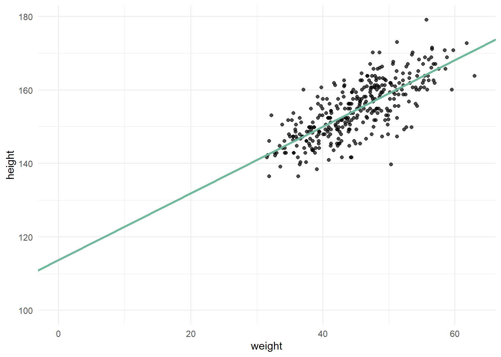

tibble(
Hypothesen = seq(0, 1, by = 0.1),
Prior = 1,
Likelihood = dbinom(6, 9, Hypothesen),
Evidenz = sum(Prior * Likelihood),
Post = (Prior * Likelihood / Evidenz)
) %>%
mutate(Post = round(Post, 2))1 Bayes-Theorem
1.1 Bayes am Baumdiagramm
1.1.1 Herleitung
Der Satz von Bayes ist das zentrale mathematische Theorem, auf dem alle Inhalte des Moduls aufbauen. Deshalb kann es hilfreich sein, ihn in seinen Grundzügen und seiner Anwendung auf komplexere Sachverhalte zu verstehen. Hierzu müssen wir aber von ganz unten anfangen, nämlich bei den guten alten Baumdiagrammen. Gehen wir davon aus, dass wir eine Formel erarbeiten möchten, mit der wir jede bedingte Wahrscheinlichkeit eines binomialverteilten Sachverhalts ausrechnen können:
Multipliziert man \(P(A)\) mit der Wahrscheinlichkeit für \(B\), under der Bedingung dass \(A\) bereits eingetreten ist, also \(P(B|A)\), so erhält man die Schnittwahrscheinlichkeit von \(A\) und \(B\), nämlich \(P(A\cap B)\). Als nächstes schauen wir uns das umgekehrte Baumdiagramm an. Multipliziert man \(P(B)\) mit der bedingten Wahrscheinlichkeit \(P(A|B)\), so erhält man ebenfalls die Schnittwahrscheinlichkeit von \(A\) und \(B\). Diese zwei Produkte können wir also gleich setzen: \[ P(A)\times P(B|A)=P(B)\times P(A|B) \] Jetzt müssen wir nur noch nach der gewünschten Wahrscheinlichkeit auflösen, zum Beispiel nach \(P(B|A)\): \[ P(A)\times P(B|A)=P(B)\times P(A|B)\ |:P(A) \] \[ P(B|A)=\dfrac{P(B)\times P(A|B)}{P(A)} \] Da haben wir auch schon unsere Formel. Diese Formel nennt man auch das Bayes-Theorem.
1.1.2 Beipsiel: Brustkrebsdiagnose
Gehen wir davon aus, dass Anna mit Brustkrebs diagnostiziert wurde und jetzt unbedingt wissen möchte, wie hoch die Wahrscheinlichkeit ist, dass sie auch wirklich Brustrebs hat. Dieser Zusammenhang lässt sich in einem Baumdiagramm darstellen:  Hier sehen wir unter anderem, wie wahrscheinlich es ist, Brustkrebs zu bekommen: \(P(B)=0,01\). Außerdem können wir die bedingte Wahrscheinlichkeit \(P(P|B)=0,8\) ablesen, also die Wahrscheinlichkeit dafür, positiv diagnostiziert zu werden, unter der Voraussetzung dass man Brustkrebs hat. \(P(\bar{P}|B)\) ist wiederum die Wahrscheinlichkeit für den Fall, dass man Brustkrebs hat, dieser jedoch vom Test nicht erkannt wird. Die Wahrscheinlichkeit, die uns eigentlich interessiert, nämlich \(P(P|B)\) ist hier aber gar nicht abgebildet; um diese abzulesen, bräuchte es das umgekehrte Baumdiagramm. Um Annas dringende Frage zu beantworten, haben wir allerdings schon alle Informationen, denn wir machen uns einfach das Bayes-Theorem zu Nutze. Wir können die Gleichung von vorhin einfach auf diese Situation anwenden, weil wir ja wissen, dass \(P(B\cap P)\) gleich \(P(P\cap B)\) ist: \[
P(P)\times P(B|P)=P(B)\times P(P|B)
\] Jetzt können wir nach \(P(B|P)\) auflösen: \[
P(P)\times P(B|P)=P(B)\times P(P|B)\ |:P(P)
\] \[
P(B|P)=\dfrac{P(B)\times P(P|B)}{P(P)}
\] Jetzt müssen wir nur noch die Wahrscheinlichkeiten einsetzen. \(P(B)\) und \(P(P|B)\) wissen wir ja bereits und die Gesamtwahrscheinlichkeit von \(P\) können wir auch ganz einfach ausrechnen, indem wir die Schnittwahrscheinlichkeiten \(P(P\cap B)\) und \(P(P\cap \bar B)\) addieren: \[
P(B|P)=\dfrac{P(B)\times P(P|B)}{P(B)\times P(P|B) + P(\bar B)\times P(P|\bar B)}
\] \[
P(B|P)=\dfrac{0,01\times 0,8}{0,01\times 0,8 + 0,99\times 0,1}
\] \[
P(B|P)=\dfrac{0,008}{0,107}
\] \[
P(B|P)=0,0747
\] Geschafft! Wir haben erfolgreich herausgefunden, wie wahrscheinlich es ist, dass Anna richtigerweise mit Brustkrebs diagnostiziert wurde. Mit anderen Worten: Wir haben die Wahrscheinlichkeit für eine Hypothese, nämlich dass sie Brustkrebs hat, unter Einbeziehung einer bestimmten Datenlage (Evidenz), nämlich dass ihr ein positives Testergebnis vorliegt. Um die Wahrscheinlichkeit für diese Hypothese auszurechnen, haben wir unser Vorwissen, nämlich die Wahrscheinlichkeit dafür, überhaupt Brustkrebs zu haben (Prior) mit der Wahrscheinlichkeit, positiv diagnostiziert zu werden, unter der Bedingung dass man Brustkrebs hat (Likelihood) multipliziert und dieses Produkt durch die gesamte Evidenz geteilt. Als Formel sieht das dann so aus: \[
P(H|E)=\dfrac{Prior\times Likelihood}{Evidenz}
\] Mit dieser allgemeinen Bayes-Formel kann man alle möglichen Hypothesen testen. Sie wird in den verschiedensten wissenschaftlichen Bereichen angewendet, um weitaus komplexere Sachverhalte als einen binomialverteilten Zusammenhang zu verstehen. Man kann auch eine ganze Reihe von Hypothesen testen, um danach festzustellen, welche Hypothese die wahrscheinlichste ist. Das tun wir zum Beispiel, wenn wir eine Bayes-Box erstellen.
Hier sehen wir unter anderem, wie wahrscheinlich es ist, Brustkrebs zu bekommen: \(P(B)=0,01\). Außerdem können wir die bedingte Wahrscheinlichkeit \(P(P|B)=0,8\) ablesen, also die Wahrscheinlichkeit dafür, positiv diagnostiziert zu werden, unter der Voraussetzung dass man Brustkrebs hat. \(P(\bar{P}|B)\) ist wiederum die Wahrscheinlichkeit für den Fall, dass man Brustkrebs hat, dieser jedoch vom Test nicht erkannt wird. Die Wahrscheinlichkeit, die uns eigentlich interessiert, nämlich \(P(P|B)\) ist hier aber gar nicht abgebildet; um diese abzulesen, bräuchte es das umgekehrte Baumdiagramm. Um Annas dringende Frage zu beantworten, haben wir allerdings schon alle Informationen, denn wir machen uns einfach das Bayes-Theorem zu Nutze. Wir können die Gleichung von vorhin einfach auf diese Situation anwenden, weil wir ja wissen, dass \(P(B\cap P)\) gleich \(P(P\cap B)\) ist: \[
P(P)\times P(B|P)=P(B)\times P(P|B)
\] Jetzt können wir nach \(P(B|P)\) auflösen: \[
P(P)\times P(B|P)=P(B)\times P(P|B)\ |:P(P)
\] \[
P(B|P)=\dfrac{P(B)\times P(P|B)}{P(P)}
\] Jetzt müssen wir nur noch die Wahrscheinlichkeiten einsetzen. \(P(B)\) und \(P(P|B)\) wissen wir ja bereits und die Gesamtwahrscheinlichkeit von \(P\) können wir auch ganz einfach ausrechnen, indem wir die Schnittwahrscheinlichkeiten \(P(P\cap B)\) und \(P(P\cap \bar B)\) addieren: \[
P(B|P)=\dfrac{P(B)\times P(P|B)}{P(B)\times P(P|B) + P(\bar B)\times P(P|\bar B)}
\] \[
P(B|P)=\dfrac{0,01\times 0,8}{0,01\times 0,8 + 0,99\times 0,1}
\] \[
P(B|P)=\dfrac{0,008}{0,107}
\] \[
P(B|P)=0,0747
\] Geschafft! Wir haben erfolgreich herausgefunden, wie wahrscheinlich es ist, dass Anna richtigerweise mit Brustkrebs diagnostiziert wurde. Mit anderen Worten: Wir haben die Wahrscheinlichkeit für eine Hypothese, nämlich dass sie Brustkrebs hat, unter Einbeziehung einer bestimmten Datenlage (Evidenz), nämlich dass ihr ein positives Testergebnis vorliegt. Um die Wahrscheinlichkeit für diese Hypothese auszurechnen, haben wir unser Vorwissen, nämlich die Wahrscheinlichkeit dafür, überhaupt Brustkrebs zu haben (Prior) mit der Wahrscheinlichkeit, positiv diagnostiziert zu werden, unter der Bedingung dass man Brustkrebs hat (Likelihood) multipliziert und dieses Produkt durch die gesamte Evidenz geteilt. Als Formel sieht das dann so aus: \[
P(H|E)=\dfrac{Prior\times Likelihood}{Evidenz}
\] Mit dieser allgemeinen Bayes-Formel kann man alle möglichen Hypothesen testen. Sie wird in den verschiedensten wissenschaftlichen Bereichen angewendet, um weitaus komplexere Sachverhalte als einen binomialverteilten Zusammenhang zu verstehen. Man kann auch eine ganze Reihe von Hypothesen testen, um danach festzustellen, welche Hypothese die wahrscheinlichste ist. Das tun wir zum Beispiel, wenn wir eine Bayes-Box erstellen.
1.2 Globusversuch/Gittermethode
Beim Globusversuch wollen wir zum Beispiel wissen, wie wahrscheinlich es ist, dass der Globus 6 mal auf Wasser (W) und 3 mal auf Land (L) zu landen, alsp wie wahrscheinlich 6 von 9 Treffern sind. Um das herauszufinden, stellen wir mehrere Hypothesen für die Trefferwahrscheinlichkeit auf, um genau zu sein 11 (jede Trefferwahrscheinlichkeit von 0 bis 1 mit einer Schrittweite von 0,1). Diese Wahrscheinlichkeiten setzen wir dann einzeln in das Bayes-Theorem ein. Beispiel: Wir möchten die Wahrscheinlichkeit für die Hypothese testen, dass die Trefferwahrscheinlichkeit p 0,6 beträgt und berücksichtigen dabei die Datenlage/Evidenz, dass wir 6 von 9 Treffern beobachtet haben. Unser Vorwissen hält sich dazu in Grenzen, weshalb wir diesen Faktor nicht mit einfließen lassen. Wir errechnen also lediglich den Likelihood, nämlich die Wahrscheinlichkeit dafür, dass wir 6 von 9 Treffern beobachten, falls die Trefferwahrscheinlichkeit wirklich bei 0,6 liegt: \[ P(p = 0,6|6\ von\ 9\ Treffern) = P(6,9|p=0,6) \] Man könnte auch sagen, dass man als Prior 1 nimmt, denn \(1\times Likelihood\) ist einfach nur der Likelihood. Damit sich alle Postwahrscheinlichkeiten zu 1 aufsummieren, teilen wir den Likelihood durch die Evidenz, also die Summe aller unstandardisierten Postwahrscheinlichkeiten. Wenn wir diese Postwahrscheinlichkeit für alle 11 Hypothesen ausrechnen, sieht das dann in Tabellenform so aus:
Der aufmerksame Leser hat im R-Code den Satz des Bayes wiedererkannt, der zur Berechnung der Postwahrscheinlichkeit genutzt wird. Die Formel für die Berechnung der relativen Wahrscheinlichkeiten aller Hypothesen (Trefferwahrscheinlichkeiten für n-mal Wasser und n-mal Land) sieht so aus: \[ P(p|W,L)=\dfrac{P(p)\times P(W,L|p)}{P(W,L)} \]
1.3 Bayesianische lineare Regression
Einn weitere Methode, bei der das Bayes-Theorem Anwendung findet, ist die lineare Regression. Dieses Thema sollte noch aus der Schule und Statstik 1 ausreichend bekannt sein. Hier trotzdem nochmal die Formel:
\[ y_{i}=\alpha+\beta x_{i} \] Jeder Wert für \(y\) (das bedeutet das Index \(i\)) ist das Ergebnis des Achsenabschnitts \(\alpha\) plus der Steigung \(\beta\) mal den jeweiligen \(x\)-Wert. Jedem \(x\)-Wert entspricht also einem \(y\)-Wert So sieht das ganze dann anhand des Kung-Datensatzes aus, wenn \(y\) Körpergröße und \(x\) Körpergewicht ist:

Der y-Achsenabschnitt sagt uns jetzt aber nur aus, wie groß ein Mensch mit dem Gewicht von 0 kg ist. Um sinnvolle Priors zu formulieren, ist es hilfreich, direkt ein Modell aufzustellen, dass mit dem zentrierten Körpergewicht arbeitet, denn wenn wir von allen Gewichten den Mittelwert abziehen, wird der Mittelwert an die Stelle, an der 0 war verschoben. Dadurch zeigt der y-Achsenabschnitt die Körpergröße eines durchschnittlich schweren Kung an:
Jetzt kommt Bayes in’s Spiel. Bei der Bayesianischen linearen Regression gehen wir nicht davon aus, dass der einzige und einzig wahre \(y\)-Wert das Ergebnis der Formel ist, sondern dass es lediglich der Mittelwert der Postverteilung ist. Es wird also kein Punktschätzer abgegeben, sondern ein Wertebereich, in dem \(y\) liegt. Das Ergebnis von \(\alpha+\beta x_{i}\) ist der Mittelwert \(\mu\) dieses Wertebereichs. Außerdem gehen wir apriori davon aus, dass dieser Wertebereich eine Normalverteilung mit Mittellwert \(\mu\) und Streuung \(\sigma\) ist. Man sagt auch \(y\) ist normalverteilt (Bei Körpergröße durchaus eine vernünftige Annahme). \[ \begin{aligned} y_i\sim Normal(\mu_{i},\sigma)\\ \mu_{i}=\alpha+\beta x_{i} \end{aligned} \] Um noch mehr Vorwissen in die Regression einfließen zu lassen, spezifizieren wir die Modellparameter in Form des Priors. Wir können nämlich unser Vorwissen zur Körpergröße eines durchscnittlich schweren Kung angeben. Wir gehen davon aus, dass diese Körpergröße bei ca. 140 cm liegt, aber auch ein bisschen darüber oder darunter liegen kann. Um diese Unsicherheit zu quantifizieren geben wir eine Verteilung mit einer sinnvollen Streuung an, zum Beispiel \(N(140, 10)\). Außerdem gehen wir von einer positiven linearen Beziehung aus, also dass ein Mensch mit höherem Gewicht auch größer ist. Das heißt, um den besten Wert für die Steigung \(\beta\) zu bestimmen, wollen wir mögliche Werte aus einer Verteilung ziehen, die nur positive Werte zulässt, wie zum Beispiel \(N(5,3)\). Die Streuung \(\sigma\) muss auch zwingend positiv sein, weil es keine negative Streuung geben kann. Deshalb ziehen wir hier aus einer Exponentialverteilung. Unsere Modellspezifikation sieht also wie folgt aus: \[ \begin{aligned} y_i\sim Normal(\mu_{i},\sigma)\\ \mu_{i}=\alpha+\beta x_{i}\\ \alpha \sim Normal(140, 10)\\ \beta \sim Normal(5,3)\\ \sigma \sim Exp(0.1) \end{aligned} \] Jetzt haben wir alle Prior-Parameter festgelegt. Aber was bedeutet das jetzt genau? Wir haben jetzt quasi einen Topf voll Zutaten, aus dem wir zufällig irgendwelche Zutaten ziehen und zusammenmischen. Zum Beispiel könnte ein Gericht, was dann ensteht, folgende Gleichung sein: \[ \begin{aligned} y_i\sim Normal(\mu_{i},10)\\ \mu=148+3x \end{aligned} \] Wenn man jetzt einen Wert für \(x\) einsetzt, zum Beispiel 4 (Reminder: wir arbeiten mit zentrierten Werten), dann bekommt man einen \(y\)-Wert, nämlich 160, heraus. Weil wir aber nicht nur ein zufälliges Gericht zusammenwürfeln, sondern ganz viele (ca. 4000), bekommen wir eben eine Normalverteilung für jeden einzelnen \(x\)-Wert heraus, die alle möglichen Kombinationen unserer Zutaten aus dem Topf enthält. Die grüne Gerade ist also nicht die einzige, sondern die Gerade der Mittelwerte dieser Verteilungen. Der graue Bereich um die Gerade herum ist der Bereich, in dem 95 Prozent aller anderen Geraden liegen:
Jedes Gericht, was aus einer zufälligen Ziehung aus dem Topf entsteht, ist eine Hypohtese. Wie immer wollen wir natürlich eine Hypothese unter Einbeziehung von Daten überprüfen. In diesem Fall sind die Daten das Gewicht und die Größe der Kung-Menschen. Um die Wahrscheinlichkeit für jede mögliche Kombination aller möglichen Modellparameter auszurechnen, multiplizieren wir wieder unser Vorwissen, also die Modellspezifikation mit dem Likelihood, also der Wahrscheinlichkeit, unsere Datenlage zu den Gewichten und Größen zu beobachten, unter der Bedingung dass unsere Priors zutreffen. Das ist quasi die Endform des Bayes-Theorems, aus dessen Postverteilung dann Stichproben für unseren stan_glm gezogen werden: \[
P(\alpha, \beta, \sigma |H,W) = \dfrac{P(\alpha, \beta, \sigma)\times P(H,W|\alpha, \beta, \sigma)}{P(H,W)}
\]